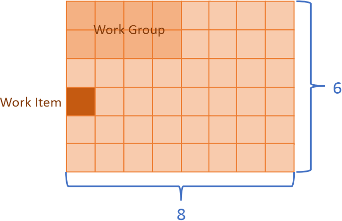

Data Parallel Kernel Programming¶
Data Parallel Extensions for Python* introduce a concept of an offload kernel, defined as a part of a Python program being submitted for execution to the device queue.

There are multiple ways how to write offload kernels. CUDA*, OpenCl*, and SYCL* offer similar programming model known as the data parallel kernel programming. In this model you express the work in terms of work items. You split data into small pieces, and each piece will be a unit of work, or a work item. The total number of work items is called global size. You can also group work items into bigger chunks called work groups. The number of work items in the work group is called the local size.
{kind=link}
In this example there are 48 work items (8 in dimension 0, and 6 in dimension 1), that is the global size is 48. Work items are grouped in work groups with the local size 8 (4 in dimension 0, and 2 in dimension 1). There are total 48/8 = 6 work groups.
In the data parallel kernel programming model you write a function that processes a given work item. Such a function is called the data parallel kernel.
Data Parallel Extension for Numba offers a way to write data parallel kernels directly using Python using
numba_dpex.kernel. It bears similarities with numba.cuda and numba.roc, but unlike these proprietary
programming models numba_dpex is built on top of SYCL* , which is hardware agnostic, meaning
that with numba_dpex.kernel programming model you will be able to write a portable code targeting different
hardware vendors.
Note
The current version of numba-dpex supports Intel SYCL devices only
This document will cover the following chapters:
- Writing Data Parallel Kernels
- Memory Management
- Synchronization Functions
- Writing Device Functions
- Supported Atomic Operations
- Defining the execution queue for a kernel function
- Supported Address Space Qualifiers
- Reduction on SYCL-supported Devices
- Universal Functions
- Random Number Generation
- Supported Python Features inside
numba_dpex.kernel